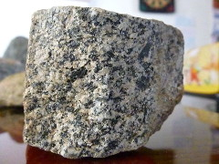
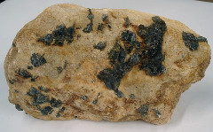
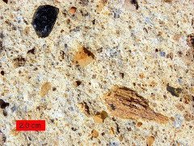
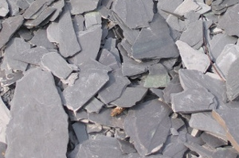
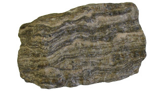
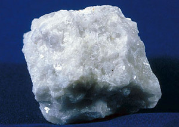
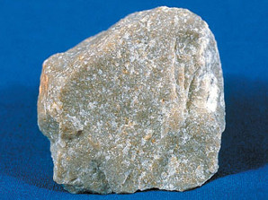

Las altas temperaturas y presiones que se ponen en juego en los procesos geológicos internos tienen relación directa con la formación de dos tipos de rocas:
-
Rocas magmáticas o ígneas, formadas a partir del enfriamiento y solidificación del magma.
-
Rocas metamórficas, originadas por transformación de otras rocas, por la acción de altas presiones y temperaturas.
Rocas magmáticas
También conocidas como rocas ígneas, se originan a partir del magma que se encuentra en el interior de La Tierra. La formación de estas rocas es debida a la disminución de la temperatura del magma y de la presión a la que se encuentra.
Dependiendo del lugar donde se enfría el magma las podemos clasificar en:
|
Rocas plutónicas |
Rocas filonianas |
Rocas volcánicas |
|
Se forman en el interior de grandes cámaras magmáticas. El enfriamiento del magma es lento y los cristales que se forman son grandes (macrocristales). Estos cristales dan a la roca un aspecto granuloso, como en el caso del granito que aparece en la imagen.  Granito |
Se originan cuando el magma se enfría en grietas y fisuras, en contacto con rocas de la corteza que están más frías que él. Aparecen cristales grandes rodeados de otros más pequeños. Un ejemplo es la pegmatita que aparece en la imagen.  Pegmatita |
Se forman por enfriamiento muy rápido, al contactar el magma con el agua o el aire. Se forman masas vítreas, que no han tenido tiempo de cristalizar. A veces se originan pequeños cristales, llamados microcristales y pueden aparecer muchos poros, como en el caso de la toba volcánica de la imagen.  Toba volcánica |
| Las rocas magmáticas o ígneas resultan del enfriamiento y solidificación de un magma. |
Rocas metamórficas
El metamorfismo es el conjunto de transformaciones que tienen lugar en estado sólido sobre una roca preexistente cuando es sometida a condiciones de presión y temperatura distintas de las que reinaban durante su formación.
El metamorfismo puede afectar a todo tipo de rocas: sedimentarias, ígneas o incluso metamórficas (basta variar de nuevo las condiciones de presión y temperatura).
Ejemplos de rocas metamórficas son las pizarras, los esquistos, los gneis, el mármol, la cuarcita...
| EJEMPLOS DE ROCAS METAMÓRFICAS | |
 Pizarra |
 Gneis |
 Mármol |
 Cuarcita |
| Las rocas metamórficas se forman a partir de otra roca previa, por cambios de presión y/o temperatura. |
Verdadero o falso
00:00:
Curiosidad
EL 95% de las rocas de la corteza son ígneas, aunque en la superficie aparecen en una proporción mucho menor debido a que quedan cubiertas por la delgada capa que forman las rocas sedimentarias y metamórficas.